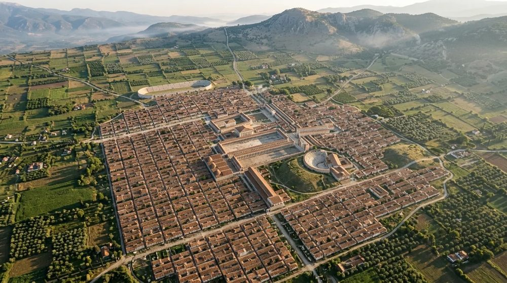
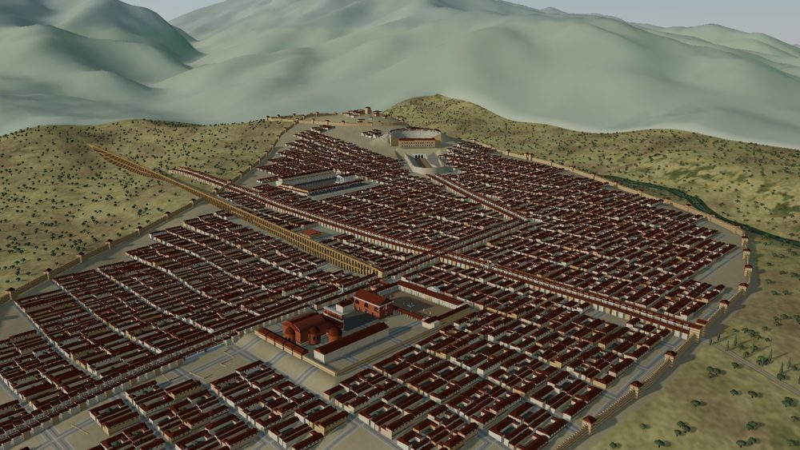

Ancient Cities 3D · Antik Kentler 3D
Walk the ancient cities of Anatolia
Rebuilt at their peak from excavation plans, satellite imagery and published sources. Choose a city to explore it in 3D.

#2 · NEWAphrodisias
City of Aphrodite: the Tetrapylon, Sebasteion, theatre and the best-preserved stadium of the ancient world.
Explore in 3D →

#1Tralleis
The rich Carian city above the Maeander valley, with its gymnasium, theatre and stadium.
Explore in 3D →